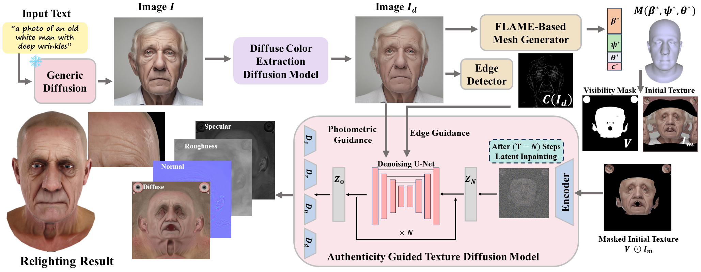
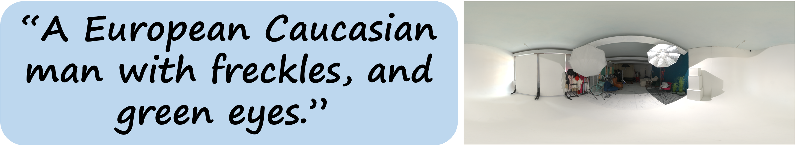
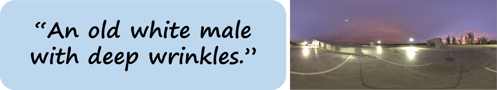
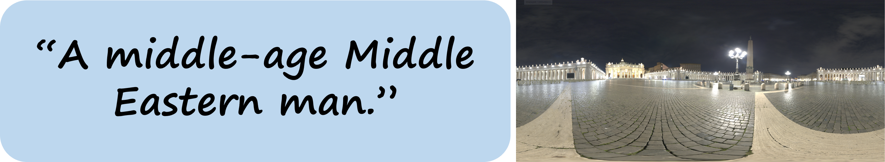

UltrAvatar: A Realistic Animatable 3D Avatar Diffusion Model with Authenticity Guided Textures
CVPR 2024
Mingyuan Zhou*1, Rakib Hyder*1, Ziwei Xuan1 Guojun Qi1,2

UltrAvatar. Our method takes a text prompt or a single image as input to generate realistic and animatable 3D Avatars with PBR textures, compatible with various rendering engines.
Abstract
Recent advances in 3D avatar generation have gained significant attentions. These breakthroughs aim to produce more realistic animatable avatars, narrowing the gap between virtual and real-world experiences. Most of existing works employ Score Distillation Sampling (SDS) loss, combined with a differentiable renderer and text condition, to guide a diffusion model in generating 3D avatars. However, SDS often generates oversmoothed results with few facial details, thereby lacking the diversity compared with ancestral sampling. On the other hand, other works generate 3D avatar from a single image, where the challenges of unwanted lighting effects, perspective views, and inferior image quality make them difficult to reliably reconstruct the 3D face meshes with the aligned complete textures. In this paper, we propose a novel 3D avatar generation approach termed UltrAvatar with enhanced fidelity of geometry, and superior quality of physically based rendering (PBR) textures without unwanted lighting. To this end, the proposed approach presents a diffuse color extraction model and an authenticity guided texture diffusion model. The former removes the unwanted lighting effects to reveal true diffuse colors so that the generated avatars can be rendered under various lighting conditions. The latter follows two gradient-based guidances for generating PBR textures to render diverse face-identity features and details better aligning with 3D mesh geometry. We demonstrate the effectiveness and robustness of the proposed method, outperforming the state-of-the-art methods by a large margin in the experiments.
Overview
We first feed a text prompt into a generic diffusion model to produce a face image. Alternatively, the face image can also be directly input into our framework. Second, our diffuse color extraction (DCE) model takes the face image to extract its diffuse colors by eliminating lighting. The diffuse image is then passed to the mesh generator and the edge detector to generate the 3D mesh, camera parameters and the edge image. With these predicted values, the initial texture and the corresponding visibility mask can be created by texture mapping. Lastly, we input the masked initial texture into our authenticity guided texture diffusion model (AGT-DM) to generate the PBR textures. The generated animatable 3D avatars equipped with PBR textures are compatible with various rendering engines for different applications.
Results
All generated avatars are rendered in UE5 with their respective generated PBR textures.
Text to Avatar Generation
We input the text prompts into the generic SD to create 2D face images. Our results showcase the reconstructed high-quality PBR textures which are also well-aligned with the meshes, exhibit high fidelity, and maintain the identity. To illustrate the quality of our generation, we relight each 3D avatar under various environment maps.
 |
 |
 |
|---|---|---|
 |
 |
 |
|---|---|---|
Relighting Results
|  |  |  |
|---|
Celebrities Generation
Our framework can generate animatable celebrities with high quality and fieldity through the input of text prompts.
Out-of-Domain Generation
Our framework has capability to generate out-of-domain cartoon characters or non-human avatars.
Texture Editing Results
Our authenticity guided texture diffusion model (AGT-DM) has capability to execute texture editing, editing results are shown here,
including changing eye and hair colors, aging effects, and adding tattoos.
Animation
Citation
@InProceedings{Zhou_2024_CVPR,
author = {Zhou, Mingyuan and Hyder, Rakib and Xuan, Ziwei and Qi, Guojun},
title = {UltrAvatar: A Realistic Animatable 3D Avatar Diffusion Model with Authenticity Guided Textures},
booktitle = {Proceedings of the IEEE/CVF Conference on Computer Vision and Pattern Recognition (CVPR)},
month = {June},
year = {2024},
pages = {1238-1248}
}